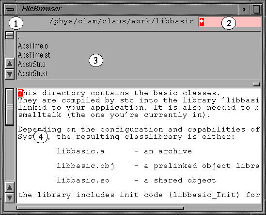

A fileBrowser can be either started by the
Launcher
or by evaluating the Smalltalk expression
FileBrowser open
The above starts the fileBrowser in the current directory.
To start a browser on some other directory, evaluate:
FileBrowser openOn:'someDirectory'
Typically, after startup, a fileBrowser looks like:

It consists of 4 subviews; these are:
To see the contents of a file, simply double-click on the
corresponding name entry in the file list. If the
selected item is a text file, its contents is shown in the
lower (contents-) view.
If its a bitmap image file (TIFF, JPG etc.), an image inspector
is opened on its contents.
If the item
name represents a directory, a change-directory into this
directory is performed.
When changing directories, the fileBrowser will automatically look for
a file named ".dir.info" or "README"
and show its contents if present. (so, its a good idea to create such
a file in every directory, to lead your friends through the directory jungle.)
The
file list will only show files matching the pattern in
the pattern field, which is by default "*", thus matching all
files. Directories are always shown, unaffected by the match pattern.
To change the match pattern, move the mouse pointer into the pattern
field, edit the pattern and type return
(or accept in the pattern fields own popupMenu).
All of the above mentioned subviews provide a popup menu, which is activated by the middle mouse button (or the right button, if you use a 2-button mouse).